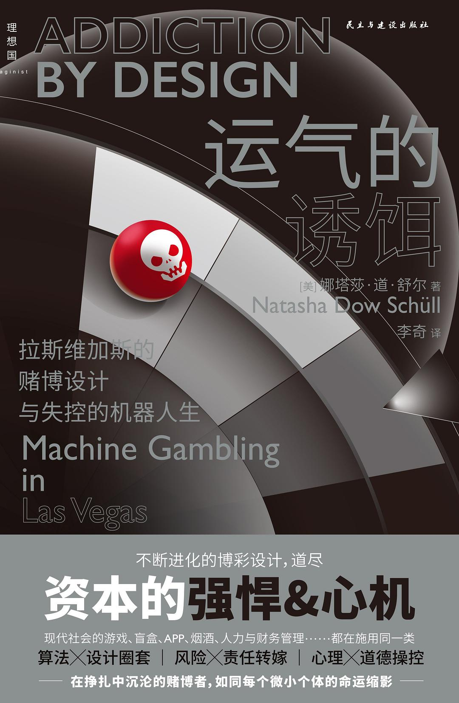

《运气的诱饵》

总体观点
纽约大学文化人类学教授娜塔莎·舒尔历时十五年在拉斯维加斯深入田野调查，完成这部震撼人心的科技与成瘾人类学经典巨著。
核心命题：现代赌博机是行为心理学、人机工程学与实时算法精心计算的“成瘾收割机器”。赌徒沉迷的核心不是贪婪，而是一种渴望彻底关闭自我意识、逃避现实焦虑的“机器迷境（the Machine Zone）”。
本书是对当今移动互联网与算法时代的深刻寓言——信息流推荐、短视频无限滑动与手游抽卡机制，本质上都沿用了拉斯维加斯赌博机吞噬人类心智的同一套算法逻辑。
核心观点
-
1. 成瘾的终极动力不是追求胜率与赢钱，而是逃避现实的“机器迷境”
赌徒在老虎机前不是为了发财，而是渴望进入一种抹杀时间感、社会角色与自我烦恼的机械心流状态。
长期赌客莫莉连续在赌博机前按键36小时，甚至戴着成人纸尿裤拒绝离开，坦言机器迷境是她唯一能感到与世隔绝的安全庇护所。 -
2. “近失（Near-miss）”效应是算法最具欺骗性的成瘾诱饵
虚拟滚轮算法刻意让屏幕停留在“只差一个图案就中大奖”的状态，刺激大脑分泌多巴胺，诱骗赌徒误以为下一次必中。
计算机程序将传统机械滚轮映射为虚拟高密度轮盘，人工调高近失事件发生概率，使赌客输掉筹码时反倒处于亢奋状态。 -
3. 赌场建筑与空间人体工学消灭了一切现实参照物
没有窗户、没有钟表、弯曲迷宫式动线与柔和地毯声效，全方位切断玩家与外部世界的连接，促使时间概念彻底溶解。
拉斯维加斯赌场设计师将单调通道设计为连续圆弧形，视线所及全被绚烂机器屏幕填满，玩家一旦走入便极难找到出口。 -
4. 实时行为监控算法将赌客异化为精密的“输钱机器”
赌场会员卡系统毫秒级追踪玩家的下注速度、止损点与情绪波动，动态调配奖励参数以压榨赌客的终身货币价值。
后台算法检测到某VIP赌客输钱速度过快濒临情绪崩溃放弃时，立刻通知巡场经理上前赠送牛排券或客房升级，精准挽留。 -
5. 工业化消除等待摩擦是促成强迫性冲动行为的核心引擎
从传统机械拉杆进化到指尖轻触屏幕、从投币硬币进化到磁条卡感应结算，摩擦力的归零彻底抹杀了理性反思的间隙。
触控屏赌博机将每次下注周期压缩至短短3秒以内，赌客手指形成无意识肌肉记忆，几千美元在不知不觉中被系统抽干。 -
6. “负责任博彩”是行业推卸结构性剥削责任的精致公关话术
博彩工业资助学术研究并大谈个体自制力，实则是将机器精心设计的成瘾机制巧妙包装成赌客个人的道德或病理缺陷。
博彩集团在机身张贴“理性下注”微小警告标签，后台却不断升级诱导成瘾的算法芯片，既规避法律监管又赚取暴利。 -
7. 现代移动互联网产品已全盘继承赌博机的成瘾算法架构
无限下拉刷新信息流、红点提示、按赞反馈与游戏抽卡，无一不是拉斯维加斯机器逻辑在当代人智能手机上的镜像重生。
社交软件用不确定的可变奖励（有时刷到神评、有时刷到垃圾）牢牢锁住用户注意力，让数十亿现代人沦为新时代的指尖赌徒。
全书结构
-
第一部分 设计
揭露赌场建筑空间、触控人机界面与虚拟转轮算法的精心设计，如何通过感官操控与“差一点就赢”假象俘获玩家注意力。
工程师将传统机械滚轮升级为电子芯片算法，运用“虚拟映射”和“近失（near-miss）”效果，让赌徒产生每一次都与大奖擦肩而过的致命错觉。 -
第二部分 反馈
剖析实时大数据追踪与行为分析技术如何精确捕捉玩家的下注节奏，动态调整激励反馈，制造毫无卡顿的顺畅下注闭环。
赌场会员卡实时监控赌客的下注频率与输光速度，算法一旦检测到赌客即将情绪崩溃放弃，立刻派服务生送上免费牛排券重新锚定留存。 -
第三部分 成瘾
深入赌博机成瘾者的内心世界，揭示玩家不是为了发财赢钱，而是为了逃避现实、进入悬置时间与自我的麻木“机器迷境（Zone）”。
受访赌客莫莉连续在赌博机前按键坐几十个小时，戴着成人纸尿裤拒绝去卫生间，她坦言并非想赢，只是渴望沉浸在不用面对现实的机械节奏里。 -
第四部分 调整
批判博彩行业将成瘾归咎于个体意志薄弱的虚伪，揭示以“负责任赌博”为幌子的公关话术与算法收割在本质上的共谋。
博彩集团赞助心理诊所推广“自我控制”教育，却在后台机器中继续优化让用户欲罢不能的算法参数，将结构性设计恶果包装为个人自控力缺陷。